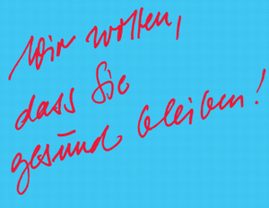

Wenn Sie weitere Fragen haben, informiert Sie Ihr Betriebsarzt im Arbeitsmedizinischen Dienst. Er kann auch den Kontakt zu Sucht- und Drogenberatungsstellen herstellen.

| Bezirk Nord |
| Hildesheimer Str. 309 |
| 30519 Hannover |
| Telefon: 0511 987-2544 |
| Telefax: 0511 987-2550 |
| E-Mail: asd-nord@bgbau.de |
| Bezirk Mitte |
| Hofkamp 84 |
| 42103 Wuppertal |
| Telefon: 0202 398-5118 |
| Telefax: 0800 668 66 88 23-815 |
| E-Mail: asd-mitte@bgbau.de |
| Bezirk Süd |
| Landsberger Straße 309 |
| 80687 München |
| Telefon: 089 8897-903 |
| Telefax: 089 8897-779 |
| E-Mail: asd-sued@bgbau.de |
IMPRESSUM |
Herausgeber und Copyright: Gestaltung: Auflage 2005 |